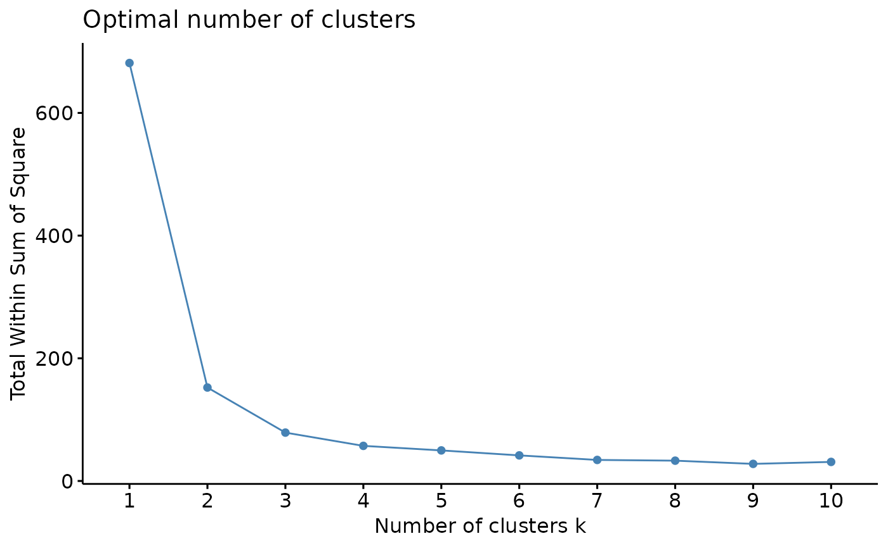
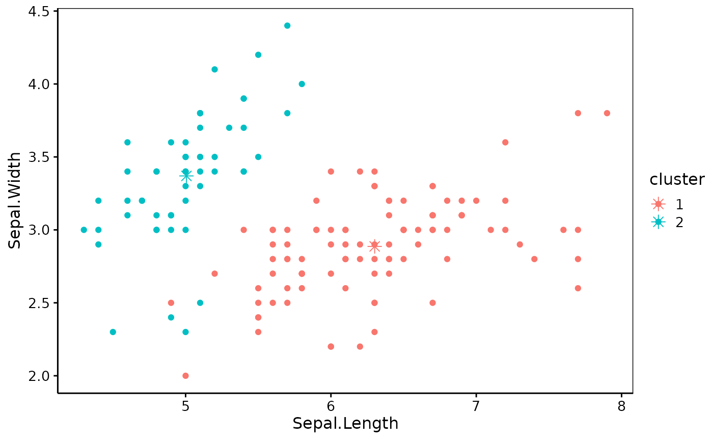
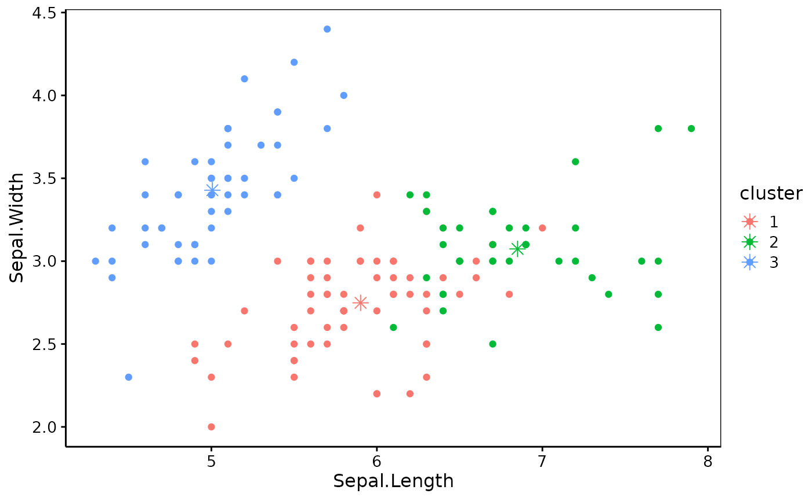

Perform a k-means clustering analysis using the
stats::kmeans() function in stats but creating a k_means object
that possibly embeds the original data with the analysis for a richer set
of methods.
k_means(
x,
k,
centers = k,
iter.max = 10L,
nstart = 1L,
algorithm = c("Hartigan-Wong", "Lloyd", "Forgy", "MacQueen"),
trace = FALSE,
keep.data = TRUE
)
profile_k(x, fun = kmeans, method = "wss", k.max = NULL, ...)
# S3 method for kmeans
augment(x, data, ...)
# S3 method for k_means
predict(object, ...)
# S3 method for k_means
plot(
x,
y,
data = x$data,
choices = 1L:2L,
col = NULL,
c.shape = 8,
c.size = 3,
...
)
# S3 method for k_means
autoplot(
object,
data = object$data,
choices = 1L:2L,
alpha = 1,
c.shape = 8,
c.size = 3,
theme = NULL,
use.chart = FALSE,
...
)
# S3 method for k_means
chart(data, ..., type = NULL, env = parent.frame())Arguments
- x
A data frame or a matrix with numeric data
- k
The number of clusters to create, or a set of initial cluster centers. If a number, a random set of initial centers are computed first.
- centers
Idem (
centersis synonym tok)- iter.max
Maximum number of iterations (10 by default)
- nstart
If
kis a number, how many random sets should be chosen?- algorithm
The algorithm to use. May be abbreviated. See
stats::kmeans()for more details about available algorithms.- trace
Logical or integer. Should process be traced. Higher value produces more tracing information.
- keep.data
Do we keep the data in the object? If
TRUE(by default), a richer set of methods could be applied to the resulting object, but it takes more space in memory. UseFALSEif you want to save RAM.- fun
The kmeans clustering function to use,
kmeans()by default.- method
The method used in
profile_k():"wss"(by default, total within sum of square),"silhouette"(average silhouette width) or"gap_stat"(gap statistics).- k.max
Maximum number of clusters to consider (at least two). If not provided, a reasonable default is calculated.
- ...
Other arguments transmitted to
factoextra::fviz_nbclust().- data
The original data frame
- object
The k_means* object
- y
Not used
- choices
The axes (variables) to plot (first and second by default)
- col
Color to use
- c.shape
The shape to represent cluster centers
- c.size
The size of the shape representing cluster centers
- alpha
Semi-transparency to apply to points
- theme
The ggplot theme to apply to the plot
- use.chart
- type
Not used here
- env
Not used here
Value
k_means() creates an object of classes k_means and kmeans.
profile_k() is used for its side-effect of creating a plot that should
help to chose the best value for k.
Examples
data(iris, package = "datasets")
iris_num <- iris[, -5] # Only numerical variables
library(chart)
# Profile k is to be taken only asx a (useful) indication!
profile_k(iris_num) # 2, maybe 3 clusters

iris_k2 <- k_means(iris_num, k = 2)
chart(iris_k2)

iris_k3 <- k_means(iris_num, k = 3, nstart = 20L) # Several random starts
chart(iris_k3)

# Get clusters and compare with Species
iris3 <- augment(iris_k3, iris) # Use predict() to just get clusters
head(iris3)
#> # A tibble: 6 × 6
#> Sepal.Length Sepal.Width Petal.Length Petal.Width Species .cluster
#> <dbl> <dbl> <dbl> <dbl> <fct> <fct>
#> 1 5.1 3.5 1.4 0.2 setosa 3
#> 2 4.9 3 1.4 0.2 setosa 3
#> 3 4.7 3.2 1.3 0.2 setosa 3
#> 4 4.6 3.1 1.5 0.2 setosa 3
#> 5 5 3.6 1.4 0.2 setosa 3
#> 6 5.4 3.9 1.7 0.4 setosa 3
table(iris3$.cluster, iris3$Species) # setosa OK, the other are mixed a bit
#>
#> setosa versicolor virginica
#> 1 0 2 36
#> 2 0 48 14
#> 3 50 0 0